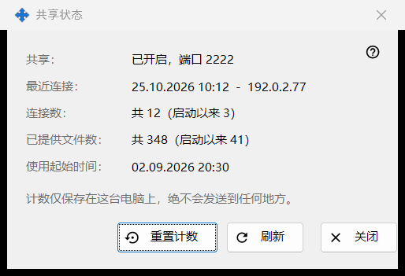
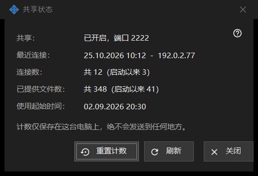

共享状态
用途说明
显示共享的当前状态及其简单计数。可从主窗口的「统计」链接打开。


操作顺序
- 阅读顶部的状态。
- 查看最近一次连接、连接数和已提供的文件数。
- 点击「刷新」获取新值。
- 点击「重置计数」重新开始计数。
- 点击「关闭」。
界面元素
状态
「共享：」说明共享是否在运行以及使用哪个端口，或者已关闭，或者工作进程不可用。「使用起始时间：」显示共享开始的时间。
计数
「最近连接：」显示最近一部手机的时间，或「尚未发生」。「连接数：」和「已提供文件数：」显示总数，括号中是自上次启动以来的数量。计数只保存在这台电脑上，不会发送到任何地方。
刷新和重置
「刷新」重新从服务器读取数值。「重置计数」会先询问：之前的数值无法恢复。如果重置失败，按钮上显示「重置失败」。「关闭」离开窗口。